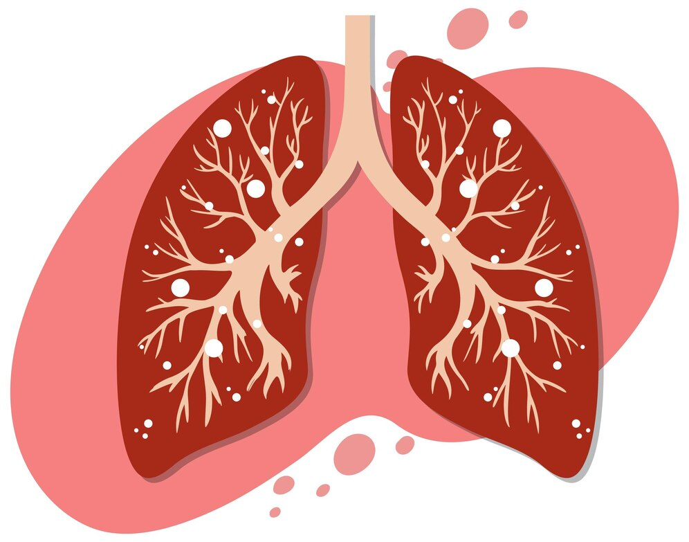
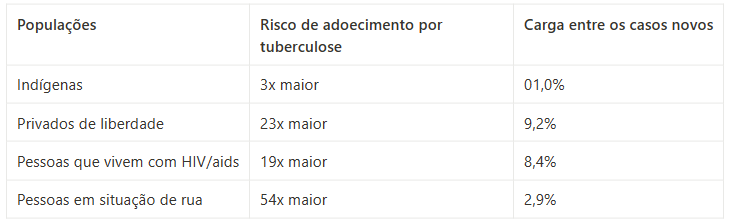

TUBERCULOSE
09/10/2023 Introdução
A tuberculose é uma doença infecciosa e transmissível, causada pela bactéria Mycobacterium tuberculosis, também conhecida como bacilo de Koch. A doença afeta prioritariamente os pulmões (forma pulmonar), embora possa acometer outros órgãos e/ou sistemas. A forma extrapulmonar, que afeta outros órgãos que não o pulmão, ocorre mais frequentemente em pessoas vivendo com HIV, especialmente aquelas com comprometimento imunológico.
Importante: A forma pulmonar, além de ser mais frequente, é a principal responsável pela manutenção da cadeia de transmissão da doença.
Epidemiologia
Apesar de ser uma enfermidade antiga, a tuberculose continua sendo um importante problema de saúde pública. No mundo, a cada ano, cerca de 10 milhões de pessoas adoecem por tuberculose. A doença é responsável por mais de um milhão de óbitos anuais. No Brasil são notificados aproximadamente 70 mil casos novos e ocorrem cerca de 4,5 mil mortes em decorrência da tuberculose.
Sintomas
Os principais sintomas da tuberculose incluem:
- - Tosse por 3 semanas ou mais;
- - Febre vespertina;
- - Sudorese noturna;
- - Emagrecimento.
O principal sintoma da tuberculose pulmonar é a tosse, que pode ser seca ou produtiva (com catarro).
Importante: Recomenda-se que toda pessoa com sintomas respiratórios, ou seja, que apresente tosse por três semanas ou mais, seja investigada para tuberculose.
Transmissão
A transmissão da tuberculose acontece por via respiratória, pela eliminação de aerossóis produzidos pela tosse, fala ou espirro de uma pessoa com tuberculose ativa (pulmonar ou laríngea), sem tratamento; e a inalação de aerossóis por um indivíduo suscetível. Calcula-se que, durante um ano, em uma comunidade, uma pessoa com tuberculose pulmonar e/ou laríngea ativa, sem tratamento, e que esteja eliminando aerossóis com bacilos, possa infectar, em média, de 10 a 15 pessoas.
A tuberculose não se transmite por objetos compartilhados. Bacilos que se depositam em roupas, lençóis, copos e talheres dificilmente se dispersam em aerossóis e, por isso, não têm papel importante na transmissão da doença.
Importante: Com o início do tratamento, a transmissão tende a diminuir gradativamente, e em geral, após 15 dias, o risco de transmissão da doença é bastante reduzido.
O bacilo é sensível à luz solar e a circulação de ar possibilita a dispersão das partículas infectantes. Por essa razão, ambientes ventilados e com luz natural direta diminuem o risco de transmissão. A etiqueta da tosse, que consiste em cobrir a boca com o antebraço ou lenço ao tossir, também é uma medida importante a ser considerada.
Diagnóstico
No Brasil, o diagnóstico da TB é realizado conforme preconizado no Manual de Recomendações Para o Controle da Tuberculose no Brasil. O diagnóstico laboratorial da TB é fundamental tanto para a detecção de casos novos quanto para o controle de tratamento. Para o diagnóstico laboratorial da tuberculose são utilizados os seguintes exames:
- - Teste rápido molecular para tuberculose (TRM-TB) ou baciloscopia;
- - Cultura;
- - Teste de Sensibilidade aos fármacos.
Além do diagnóstico laboratorial, a avaliação clínica é de suma importância para o diagnóstico da TB e a realização da radiografia do tórax é indicada como um método complementar para esse diagnóstico.
Tratamento e Prevenção
O tratamento da tuberculose dura no mínimo seis meses, é gratuito e está disponível no Sistema Único de Saúde (SUS). São utilizados quatro medicamentos para o tratamento dos casos de tuberculose que utilizam o esquema básico: rifampicina, isoniazida, pirazinamida e etambutol. A tuberculose tem cura quando o tratamento é feito de forma adequada, até o final. O papel dos profissionais de saúde em apoiar e monitorar o tratamento da tuberculose, por meio de um cuidado integral e humanizado, é muito importante. Uma das principais estratégias para promover a adesão ao tratamento é o Tratamento Diretamente Observado (TDO).
O TDO consiste na observação da tomada do medicamento pela pessoa com tuberculose sob a observação de um profissional de saúde ou por outros profissionais capacitados, como profissionais da assistência social, entre outros, desde que supervisionados por profissionais de saúde. Esse regime de tratamento deve ser realizado, idealmente, em todos os dias úteis da semana, ou excepcionalmente, três vezes na semana. O local e o horário para a realização do TDO devem ser acordados com a pessoa e com o serviço de saúde. A pessoa com tuberculose necessita ser orientada, de forma clara, quanto às características da doença e do tratamento (duração e esquema do tratamento, recomendações sobre a utilização dos medicamentos, eventos adversos).
Importante: logo nas primeiras semanas do tratamento, a pessoa se sente melhor e, por isso, precisa ser orientada pelo profissional de saúde a realizar o tratamento até o final, independentemente do desaparecimento dos sintomas. É importante lembrar que o tratamento irregular pode complicar a doença e resultar no desenvolvimento de tuberculose drogarresistente.
Vacinação com BCG
A vacina BCG (bacilo Calmette-Guérin), ofertada no Sistema Único de Saúde (SUS), protege a criança das formas mais graves da doença, como a tuberculose miliar e a tuberculose meníngea. A vacina está disponível nas salas de vacinação das unidades básicas de saúde e em algumas maternidades.
Importante: Essa vacina deve ser ministrada às crianças ao nascer, ou, no máximo, até os quatro anos, 11 meses e 29 dias.
Populações Mais Vulneráveis
Além dos fatores relacionados ao sistema imunológico de cada pessoa e à exposição ao bacilo, o adoecimento por tuberculose, muitas vezes, está ligado às condições precárias de vida. Assim, alguns grupos populacionais podem apresentar situações de maior vulnerabilidade. O quadro abaixo traz algumas dessas populações e os seus respectivos riscos de adoecimento em comparação com a população em geral.
 IBGE. Brasil. Censo Demográfico, 2015. Tbweb. São Paulo, 2021. Censo. Pessoal em Situação de Rua em São Paulo, capital, 2021.